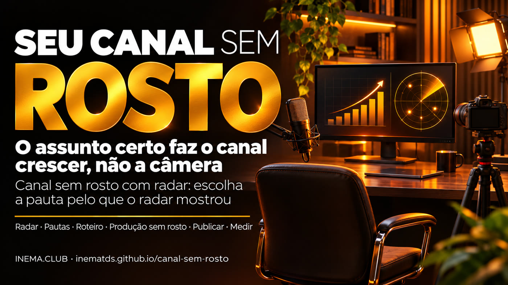

O que faz um canal crescer é o assunto certo, não a câmera. O canal sem rosto com radar escolhe a pauta pelo que o radar mostrou (o radar é um painel grátis que, toda manhã, mostra os vídeos que passaram muito das views normais do próprio canal): assuntos em que canais pequenos fizeram muitas vezes o normal deles.

Muita gente quer ter um canal sobre IA, mas não quer aparecer. A boa notícia: no nosso radar do YouTube, o que mais puxou as views foi o assunto, não quem aparece. O canal sem rosto com radar é um método em 5 etapas e um kit grátis: ele lê o radar do que está bombando, separa os assuntos em que canais pequenos e médios furaram a bolha e sugere pautas com os números e um formato sem rosto para cada uma. Você precisa de um computador com Python e do radar youtube-bombando (também grátis). Não há promessa de dinheiro nem de views: o radar mostra uma chance.
Rodada de 12/11/2026 do nosso radar: 320 vídeos recentes em 7 assuntos de IA. Para cada vídeo, o radar compara as views com o normal do próprio canal (a mediana dos últimos vídeos dele). Fez 3 vezes ou mais o normal? Então o assunto furou a bolha do canal. Canal pequeno = menos de 10 mil inscritos; médio = de 10 mil a 500 mil; acima disso, grande.
vieram de vídeos que fizeram 3× ou mais o normal do canal. O público foi atrás do assunto.
furaram a bolha pelo conteúdo nesta rodada: 48% dos 105 vídeos desses canais em que o radar conseguiu medir o normal, contra 5 de 27 (19%) nos canais grandes.
foi o maior salto da rodada, num canal pequeno, sobre um recurso novo do ChatGPT para negócios.
Parte das views de cada tema que veio de vídeos com 3× ou mais o normal do próprio canal (categoria "Conteúdo" do radar).
Quantas vezes o normal do próprio canal, por duração do vídeo: o valor do meio de cada faixa (mediana), mesma rodada. Entre parênteses, quantos vídeos.
Saída real do kit sobre o radar de 12/11/2026. Só entra assunto em que pelo menos 2 canais pequenos ou médios diferentes fizeram 3× ou mais o normal deles, com 1.000 views ou mais. Nenhum nome de canal ou de vídeo sai na saída: só o assunto e os números (aqui com os rótulos dos temas e dos formatos resumidos).
← arraste a tabela para o lado para ver o formato sem rosto →
| # | Assunto | Canais | Quantas vezes o normal (mediana) | Duração mais comum | Formato sem rosto |
|---|---|---|---|---|---|
| 1 | curso ou guia completo do zero, em Claude Code | 4 | 27,3× | 20–60 min | tela gravada com a sua narração, um projeto em etapas |
| 2 | Claude Code (vários temas) | 3 | 11,3× | 8–20 min | quadro ou diagrama animado com a sua voz, um caso do começo ao fim |
| 3 | automação e agentes, em agentes de IA | 3 | 4,9× | 20–60 min | tela gravada com a sua narração, um projeto em etapas |
| 4 | negócio, em ChatGPT | 2 | 412,1× | até 8 min | quadro animado com a sua voz, uma dúvida resolvida com demonstração |
| 5 | opinião e tendência do setor, em IA | 2 | 57,8× | 8–20 min | quadro ou diagrama animado com a sua voz, um caso do começo ao fim |
| 6 | diário de construção (série de dias), em vibe coding | 2 | 28,7× | mais de 60 min | quadro ou diagrama animado com a sua voz, em capítulos |
| 7 | imagem, áudio e vídeo, em ChatGPT | 2 | 16,2× | 8–20 min | quadro ou diagrama animado com a sua voz, um caso do começo ao fim |
| 8 | ganhar dinheiro e negócio, em ganhar dinheiro com IA | 2 | 15,5× | 20–60 min | quadro animado com a sua voz, um projeto em etapas |
| 9 | recurso novo, em agentes de IA | 2 | 3,7× | 8–20 min | notícia comentada com a sua opinião e um teste seu |
| 10 | ferramentas, skills e plugins grátis, em Claude Code | 2 | 3,4× | 8–20 min | quadro ou diagrama animado com a sua voz, um caso do começo ao fim |
Os números mudam a cada rodada. Para tirar as pautas de hoje no seu assunto, veja como usar ↓.
Do assunto ao vídeo publicado, e de volta ao radar para ver se deu certo.
Rode o radar do que bomba no seu assunto e peça ao kit as pautas. Assunto bom é aquele em que canal pequeno fez muitas vezes o normal dele: o público foi atrás do tema, não do nome.
Nos primeiros 15 segundos, a dor ou o desejo de quem assiste, em "você". Uma ideia por vídeo. O kit curiosidade-viral ajuda a achar o gancho.
Tela gravada com a sua narração, quadro ou diagrama animado, teste real comentado. Não aparecer é opcional; pensar, testar e explicar não são.
Título e capa dizem o que a pessoa ganha. A duração segue o que o radar mostrou no seu assunto. Publique no ritmo que você aguenta manter.
Sete dias depois, compare o seu vídeo com o normal do seu canal. Furou? Mantenha o assunto. Não furou? Troque a pauta, não a câmera.
Conferido em 13/11/2026 nas páginas oficiais de ajuda do YouTube. Isto muda: confira sempre na fonte antes de decidir.
1.000 inscritos e 4.000 horas de exibição públicas nos últimos 12 meses, ou 1.000 inscritos e 10 milhões de views de Shorts em 90 dias. Fonte
1.000 inscritos e 8.000 horas em 365 dias, ou 20 milhões de views de Shorts em 90 dias. Quem já está no programa não muda. Recursos de fã continuam com 500 inscritos e 3.000 horas no último ano, ou 3 milhões de views de Shorts em 90 dias. Fonte
Conteúdo de molde e repetitivo: slideshow de imagens ou texto rolando sem narração, conteúdo de IA genérico produzido em massa sem a visão do criador, leitura de texto de site ou notícia que você não criou. Fonte
Três kits grátis do INEMA que se completam.
O radar: toda manhã, o que está bombando no seu assunto, e por quê.
Transforma o radar em pautas sem rosto, com os números e o formato.
Ajuda a escrever o gancho que faz a pessoa ficar.
Daqui para baixo é a parte técnica: baixar, rodar e ler as pautas. Você não precisa desta parte para entender o que está acima.
Lê o arquivo do radar (dados.json) e grava saida/pautas.md e saida/pautas.json: até 10 pautas, os sinais fracos (assunto que furou a bolha em um canal só) e o que fica fora do método.
Procura nome de canal, título ou id de vídeo de terceiro no seu roteiro ou na sua saída antes de publicar.
As 5 etapas, uma por arquivo, e as regras do YouTube conferidas na fonte, com data.
O título de cada vídeo serve só para achar o tema (curso completo, comparação, novidade, negócio, etc.) e nunca aparece na saída. Ordem: mais canais diferentes, depois maior mediana, depois mais views. Se menos de 10 assuntos passarem, o kit diz quantos passaram e não completa com sinais fracos. Os temas ficam em temas.json e você pode editar.
Só a biblioteca padrão, nada para instalar com pip. Testado no Linux; no Windows o comando costuma ser python ou py no lugar de python3. Confira:
python3 --versionPara baixar o kit. Sem git, use "Code → Download ZIP" na página do GitHub e descompacte ao lado da pasta do radar.
Na mesma pasta onde está o radar (para as duas pastas ficarem lado a lado):
git clone https://github.com/inematds/canal-sem-rosto cd canal-sem-rosto
É ele que gera o dados.json. Instale pelo guia dele e troque os assuntos para o seu nicho.
O repositório traz um radar inventado, para você ver a saída antes de ter o seu:
python3 pautas.py exemplos/dados-sintetico.json # abre saida/pautas.md
O radar grava o arquivo em painel/dados.json, dentro da pasta dele, depois da primeira coleta. Sem caminho, o kit procura o radar na pasta ao lado (../youtube-bombando), em ~/projetos/youtube-bombando e em ~/youtube-bombando. Se ele estiver em outro lugar, passe o caminho:
python3 pautas.py python3 pautas.py ../youtube-bombando/painel/dados.json
Padrão: 10 pautas, 1.000 views ou mais, 3× o normal do canal, pelo menos 5 vídeos na média do canal.
python3 pautas.py --n 5 --piso-views 5000 --fator 4
Com --detalhes, o kit grava também saida/detalhes-PRIVADO.md com títulos e canais de cada pauta, para você estudar. Não publique esse arquivo.
python3 pautas.py --detalhes
Salve o seu roteiro num arquivo de texto (ex.: roteiro.txt). O conferidor procura nele o nome exato de cada canal, o título inteiro de cada vídeo e os ids do radar (pedaço de título não é achado: releia você também). Se achar, mostra o arquivo, a linha e o nome mascarado (ex.: roteiro.txt:3:U***I) e sai com código 1: tire o nome e rode de novo.
python3 checa_sem_fonte.py ../youtube-bombando/painel/dados.json roteiro.txt # "nenhuma fonte de terceiro encontrada" = pode seguir
python3 -m unittest discover -s tests
| Arquivo | O que é |
|---|---|
exemplos/dados-sintetico.json | radar inventado, com canais e títulos fictícios, cobrindo os casos difíceis (sem porte, sem duração, humor, canal grande) |
exemplos/pautas-exemplo.md | a saída do kit sobre esse radar inventado |
metodo/regras-youtube.md | as regras do programa de parcerias e de conteúdo repetitivo, com as fontes oficiais e a data da conferência |